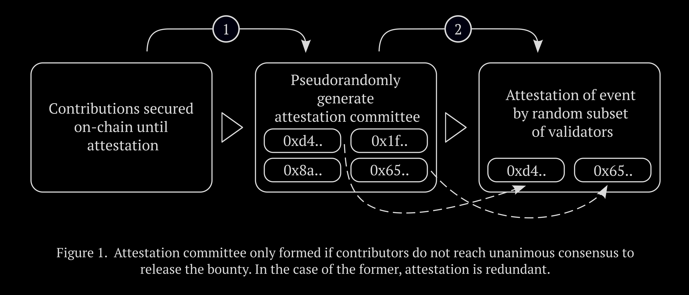
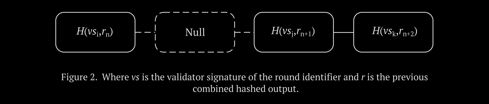
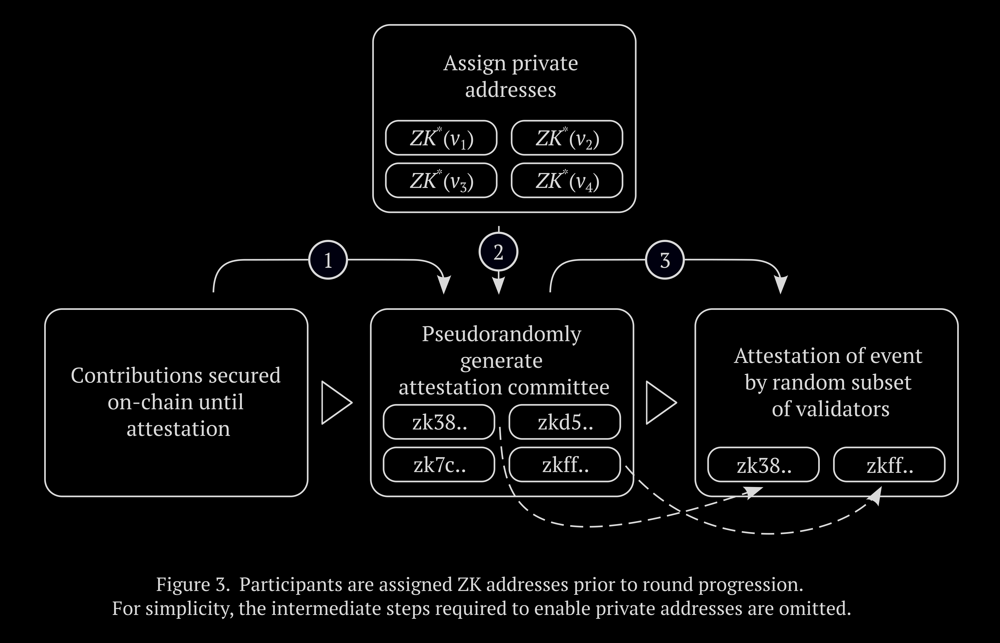

In a largely overlooked 1888 essay, Peter Kropotkin went against the sentiment of many anarchist theorists of the time and argued that it could very well be the case that most individuals are not fundamentally kind and compassionate; are not searching for broad equality and do not have the interests of others at heart, finally concluding:
[...] precisely, therefore, they must not continue living under the present system which permits them to oppress and exploit one another.
It’s a strikingly unreserved assertion from a theorist who was often derided as utopian by contemporaries. Doing away with the perceived assumption that anarchism relies on an axiomatic good nature in order for it to be viable, Kropotkin instead offers a sober perspective: the human condition is complex, and the tendency to seek out dominative power structures is only further reason to circumvent them in the first place. The same basis that is often cited as justification for the status quo, namely that of unbridled selfishness, is simultaneously used to argue for a less hierarchical form of social organisation. In this respect, it can be thought of as a type of Rorschach test — those that don’t confine themselves to an overly idealistic perception of human nature agree that even under a different system there would still be a penchant to sometimes act in a way that is collectively adverse, broadly speaking, but see wildly different solutions on how to mitigate it. In the same essay, Kropotkin rightfully avoids falling into the trap of categorising human nature as having a definitive quality, which would be nonsensical if for no reason other than it being malleable, and instead insists that more conservative proponents tend to simultaneously exaggerate the anti-social instincts of broader groups while downplaying the role mutual aid has had in our survival.
Trust has been an object of inquiry, both directly and indirectly, for millennia. Its ontology is complex, with doxastic and non-doxastic views, distinctions from pure reliance and circumstances in which intrinsic value in trust can arise. It goes far beyond simply a device of convenience or something that is used in certain situations, demonstrating a ubiquity that allows it to be described as an important building block of social relations. Whether it stems from belief or a sort of optimism, which has historically been a topic of much debate, it finds itself even in inconspicuous everyday interactions as it signals an amiability on the part of the trustor that is often understood intuitively. In a similar vein, we sometimes trust for other indirect reasons, for example to make certain spaces feel more welcoming and inclusive to new participants or as a precaution to avoid causing offence. More broadly, much of what we observe in this context can appear counterintuitive; it is common to trust even when an individual is cognizant that it will not produce anything tangible outside of itself, for instance as a token of respect in settings where there is no possibility of reciprocity, and on the flip side, we sometimes observe distrust for its intrinsic value as well, that is, even when it is apparent that trust will result in tangible gain, it might be forgone as a matter of principle. This often carries a social penalty, regardless if the tendency to be generally distrusting arises from past experience or pessimism, and can take the form of systemic disenfranchisement. Of note, more progressive societies are not immune from the tendency to penalise distrust, with simplistic conceptions of human nature sometimes being axiomatic to their most idealistic expressions. An example of this is placing too much emphasis on interpersonal relationships within a community, which often inadvertently has ableist implications and can come at the expense of privacy.
Crucially, there is a chasm between reliance and trust. A classic example of the former used to illustrate the difference is a scenario where a shelf that is relied on to provide support for a vase suddenly fails. Few would feel a sense of misplaced trust by the shelf giving out, rather, the sentiment would be more akin to misplaced reliance. On the other hand, when an individual carries out an action that is directly counter to a trustor’s expectation, a sense of misplaced trust often follows. Of particular relevance here is the distinction between distrust and reliance; simply distrusting an individual does not amount to reliance that an action contrary to their expectation will be carried out, only that the possibility exists regardless of how minute it might be. This has the implication that the trustee should not necessarily be under the impression that the trustor believes that there is a commitment to act maliciously, rather, that precautions are sometimes prudent, and even when there is an acknowledgement that acting in bad faith is unlikely, it might be advantageous for a system of exchange to be designed in a way that accounts for this prospect. This is already normative to an extent in many facets of life. For instance, when we sometimes meet in person to complete a transaction, there’s usually an implicit understanding by both parties that it occur in a public place, just as a precautionary measure, and is rarely viewed as a damning indictment of the other party.
Within an ontological lens, the term trustless in the context of distributed ledger technology is sometimes pushed back upon, as even in an environment that has the attribute of immutability and where operations are deterministic, trust is not eliminated in the most complete sense; most individuals are not going to personally go through the contract code of an application that they’re interacting with themselves, instead relying on third-party audits, and the front end used to access smart contracts is also often closed-source and opaque. Compounding this, whenever off-chain components are introduced, for instance when an oracle needs to obtain some external data, additional trust assumptions are sometimes needed — especially when adequate incentives are not put in place to encourage integrity of the process. All of this has resulted in some preferring to use the term trust minimised instead of trustless, but this is problematic in its own right; many traditional systems already claim to minimise trust, perhaps most fundamentally with legal contracts, and the type of trust mitigation associated with distributed ledger technology remains categorically different. At the crux of the issue are our limitations with language and the usefulness of heuristics to convey meaning, without having to make every caveat explicit. It could be argued that the term trust minimised muddies the concept to an unacceptable degree, and trustless remains the most useful term in conveying the underlying notion.
Considerations around human nature, trust and incentive structures are incredibly relevant even to the progressively-minded experiments currently underway making use of distributed, permissionless technologies. This is only further accentuated by the ubiquitousness of immutability in this setting, which has the practical implication that important design elements at both the protocol layer and application layer often have to be established to a greater degree at the outset. This is in contrast to their centralised counterparts, which commonly have greater affordance to make fundamental changes reactively down the track without the added complexity of gaining on-chain consensus with a hard fork. Circles is a protocol that shares many similarities to mutual credit systems; users can issue their own currency, which is limited for use within a social graph, and with a value that is contingent on activity in this subset rather than the network as a whole. The original issuer of the currency does not need to have a direct connection with everybody accepting it as each user can subsequently expand the social graph by trusting additional users. This approach, which Circles refers to as transitive transactions, allows the web of trust to expand, but can simultaneously affect the utility of the currency if too many malicious actors are trusted. Another notable project is Giveth, which is a platform that allows users to support not-for-profit projects, particularly those focused on social, humanitarian and environmental causes. All donations are verifiable on a public ledger, and because users are mostly interacting with a decentralised application that requires no first-party overhead to run, the entirety of contributions are able to be forwarded to a given project. Jurisdictional issues associated with cross-border donations are also mitigated to an extent, which allows for a greater variety of causes than what is typically seen on traditional donation platforms. At the more infrastructural level, there are projects such as Commons Stack, which provide some of the framework that cooperative projects leveraging distributed technologies build upon. Research stemming from the collective includes a modified bonding curve designed for greater long-term sustainability, and a preference allocation mechanism that discards fixed close times and weighs towards persistence in a given preference. Of note, Commons Stack not only provides the technical apparatus, but some of the conceptual groundwork for building commons-based initiatives.
All of these experiments are worthwhile; they bring utility that takes advantage of at least some aspects that a distributed state machine offers. It is, however, notable that some of the most prominent progressively-orientated projects do not set out to make use of the most distinguishing feature of this new paradigm: the fundamental rejection of many of the trust assumptions that were formally relied on. Circles, for instance, shifts trust away from centralised infrastructure to facilitate transactions, which is often not the case with off-chain equivalents, but the concept of mutual credit itself is, quite obviously, rooted in trust. Giveth does not offer an on-chain mechanism to lock contributions in a way that is contingent on smaller milestones, and while this would be inappropriate for many types of projects, there are others that are commonly found on their platform, particularly open source initiatives, where this might make sense. Commons Stack, similarly, does not provide the technical architecture for building incentively-sound oracles that would allow validators to attest to the sort of milestones described in the former, and this has the flow-on effect that many higher level projects omit attempting to implement this kind of mechanism. It’s worth noting that all three of these projects do not shy away from their trust assumptions, nor do they try and represent something that they are not; Circles goes to great lengths to outline the importance of trust in order to make their system feasible, Giveth makes it clear that there are no assurances on how a project will spend contributions, and Commons Stack explicitly states that human trust is integral to the cultural framework that underpins their offerings.
It’s not hard to see why this pattern is emerging: as progressives we have historically had an optimistic outlook on trust; this is partly because we see it as necessary for cooperation in some respects and partly because we want to be careful not to disempower marginalised groups that often feel the brunt of sentiments of distrust. But, particularly over the last decade, significant strides have been made in enabling a variety of mechanisms that allow this need to be mitigated, and at the very least we should be questioning why we still need to tightly couple optimistic trust assumptions with the ideals of the left, especially where it comes at the cost of anonymity and scale. Where trust may no longer be needed, it’s possible to scale far easier than in a scenario that requires interpersonal relations; we likely correctly point out that human nature is largely a product of environment and social norms, but we sometimes focus on this to the point where we end up with insufficient practical solutions in settings where this basis is immaterial. Of course, this does not mean the aforementioned projects should be discouraged, rather, they should simply not be heralded as being examples of collectively-minded initiatives making maximum possible use of distributed ledger technology.
Contrary to popular belief, the real breakthrough in Satoshi Nakamoto’s 2008 whitepaper was not its state machine replication algorithm; much of the groundwork was already laid out in the years prior with research into Byzantine fault tolerant systems and the Paxos class of protocols. Its major contribution was providing the first practical solution to the Byzantine generals problem in the context of a permissionless cryptocurrency. Here, nodes could not only remain anonymous, but could arrive at a single source of truth regardless of how large the network grew. In the years that followed, the concept was extended to a distributed virtual machine with a state that can be modified via a Turing complete language, and this enabled many layers of abstraction far beyond the network and consensus layers. Yet, despite all the layers of abstraction that have been developed, there is — perhaps surprisingly — no widely-held standard on how to address the Byzantine generals problem at the subjective layer. At face value, this may seem like an insurmountable challenge, after all, an inherent attribute of subjectivity is not comparable to the challenge of reaching consensus on layers with objectively-defined parameters. But just as Bitcoin only solved the Byzantine generals problem in a probabilistic way that will very rarely reach a state that requires a hard fork to resolve, the transfer of trust from subjective off-chain events to on-chain mechanisms does not need to be completely fault resistant either. Rather, it must only be reliable enough for it to be feasible, and in rare cases where it fails, there is an appropriate contingency mechanism in place to deal with it. The social advantages that will stem from the widespread use of this type of subjective decentralised oracle are more than worthwhile — it will allow us to have far more complex systems that mitigate trust at scale than what is currently possible with only on-chain components.
Of course, it’s not particularly useful to just point out the weaknesses of current experiments; potential solutions need to be put forward.
Incentively-sound decentralised oracles, that verify off-chain events that have a degree of subjectivity, can play a part in enabling us to build more socially expressive mechanisms without trust assumptions. Here, release of a bounty or reward is contingent on pre-defined criteria, which in turn allows all parties to not have to trust each other. At first glance, this primitive might appear to be equivalent to a simple democratic process to determine the fate of a locked reward, but there’s an important distinction, because the latter would not only not be all that useful, but wouldn’t benefit significantly from being on-chain. Rather, we want to take full advantage of the distributed state machine and design it with incentives that encourage validators to arrive at a Schelling point that reflects honest attestation of an event. Therefore, nodes are not simply voting based on a vague preference, but rather, attesting to what is presented before them in a way that is objective as possible. Just as simple transfers between addresses and deterministic operations with smart contracts can be described as trustless, we want to make this decentralised oracle — despite the order of magnitude increase in complexity — as trustless as possible.
A basic visual overview of this primitive is as follows:
Validators that attest outside the consensus, whatever the threshold is set at for a given round, face slashing of their stake. Validators that attest within the consensus receive a reward, which can be sourced in various ways, but most logically from the fees generated by round originators making use of the platform. Nodes chosen to attest are selected pseudorandomly, and represent a subset of the total validator pool. This is to make collusion more difficult, Sybil and bribing attacks more prohibitive, and as a practical measure to increase the liveness of the system. A round should reflect the smallest unit possible in an overarching project, as breaking it up into milestones not only allows the project originator to access needed resources earlier, but makes the task of validators easier as the outcome that is being attested to consists of more discreet items. As touched upon earlier, however, even the short-term locking of resources is not appropriate for some types of projects, and in these cases — where funding is needed upfront — trust-based mechanisms are more suitable.
Already, however, there are several problems with this basic design that need to be overcome before it can be considered practical. If on-chain logic is deterministic, how do we select a subset of validators in a way that is sufficiently random? Is anonymity by any parties involved needed for the system as a whole to be feasible? Let’s start with the former: thanks to asymmetric cryptography, we can generate sufficient randomness for the purposes of validator selection by requiring a validator to sign the current round identifier with a private key, combining the hashed signature with a value derived from the previously selected validator, and then using the final output as the source of entropy. Because it is inevitable that some validators will not be available and eventually miss signing successive rounds, and because each value is chained in a way that is dependent on the previous validator’s signature, it is adequately unpredictable for the application at hand.
Here’s what this approach would look like:
This is similar to how some networks generate entropy for the purposes of security at the consensus layer, including what is currently the second largest blockchain, and as a practical concern, the decentralised oracle described here can in some cases access the exposed value from this consensus layer rather than requiring it to be generated from the protocol itself.
The next problem we’d need to deal with is assumptions around anonymity. Within the system described so far, there are various parties each with a variety of roles that ultimately allow an off-chain event to be trustlessly reflected on-chain. A round originator may not necessarily be the same entity as the recipient in the event of successful attestation, therefore in a typical round, we might see three main parties: the originator, the recipient and the validators that will need to attest to an event. All three categories of participants need to have the option to remain anonymous — for reasons that will become more apparent soon — and this immediately adds complexity, both because of direct technical reasons related to enabling this type of coordination, and for more insidious reasons, such as effectively guarding against Sybil attacks and collusion. As an entity can generate multiple addresses in an attempt to dishonestly validate their own project, the decentralised oracle must be designed in such a way that makes this generally unfeasible. The primary ways to achieve this are by making the ratio between validators randomly selected to attest and the total validator pool as large as possible, and by obfuscating the details associated with individual attestations, which in turn not only makes it difficult for a malicious actor to know which validators to bribe but also makes it harder for the bribe recipient to definitively prove that the desired attestation took place. Because slashing is a possibility when attesting outside a given consensus, attacks which involve controlling multiple validators, both directly and indirectly through persuasion, quickly become unfeasible when the expected expenditure is greater than the value of the bounty at stake. Beyond validators, the round originator and bounty recipient must also have the ability to remain anonymous — or pseudonymous — as this would be the expectation for projects that challenge the status quo to any degree, and more generally, out of a need for basic privacy. The release of the bounty is, of course, contingent on a pre-defined outcome, therefore, unlike conventional reward schemes, anonymity of the recipient is possible as the system has been designed to not require trust at the outset.
So then how do we achieve this anonymity while still allowing the various components of the system to interface with each other correctly? The heart of the problem lies in developing a way for those initiating rounds or making attestations, which can be referred to as provers, to submit an operation on-chain that can be confirmed by the counterparty, alternatively known as verifiers, in such a way that no information beyond the validity of the operation itself is revealed to the verifier. Because we’re operating in a trustless environment, there is the added challenge of needing both the prover and the verifier to exchange this information in a way that doesn’t require direct interaction, and finally, as resources on a distributed state machine are limited, the solution has to be efficient. Putting all of this together, we essentially want to leverage the cryptographic primitive known as non-interactive zero-knowledge proofs (NIZKs) for everything from round creation, validator selection, attestations and operations transferring the bounty. The current best practice to achieve this in a way that doesn’t use an excessive amount of resources, in other words, succinctly, is via zero-knowledge succinct non-interactive arguments of knowledge (zk-SNARKs). The nuts-and-bolts of how these work, including common techniques used to convert the arithmetic circuit to the needed polynomial which ultimately enables the anonymity we’re looking for, is well outside the scope of this essay. The main takeaway is that these are solved problems and have already been implemented in other applications not too dissimilar to our decentralised oracle.
Applying this primitive to our original design:
It’s likely that we will reach a point where validators will start heavily relying on artificial intelligence during the attestation process. This isn’t something that can be prevented, even if we wanted to, and fortunately it doesn’t break the feasibility of the system; because it is ultimately an entity that wants to receive a tangible reward for attesting, the same incentives remain in place to arrive at a Schelling point for a given round. Put another way, in the setting of competitive pressure, participants making use of a poorly-optimised or obsolete AI to augment attestation will eventually face the prospect of repeated slashing as they attest in a way that is not consistent with consensus.
More practically, what type of projects is this decentralised oracle most suitable for? Initiatives that advance the ideals of the left or simply projects that facilitate exchange in a way that allows all parties to remain anonymous, or pseudonymous, and largely outside the reach of the state? The answer is both. Many existing progressively-minded projects making use of distributed ledger technology have so far made little headway because they’re generally not built on trustlessness at the very foundation, and this in turn inhibits facets that are needed in order to challenge the status quo to any extent, namely that of anonymity, leaving us with mechanisms that mostly replicate off-chain equivalents rather than make maximum possible use of the technology. At the same time, counter-economics outside the state apparatus, or a type of parallel economy without trust assumptions, will not only indirectly help towards our ends, but is relevant to how some forms of non-essential exchange could take place under post-capitalism. Therefore, this essay advocates for an oracle-centric strategy to enable progress towards the ideals of the left — an approach that reflects a sort of trustless solidarity — as well as use of the same underlying mechanism to facilitate some forms of broader exchange.
As this section primarily deals with post-capitalism, an important assumption needs to be made at the outset that is rarely put explicitly in the context of distributed ledger technology and the left: a form of social organisation where basic needs such as housing and healthcare are contingent on direct reciprocity is not only an undesirable future for many, but in some respects, isn’t particularly different from the status quo. Therefore, the incentive structures that a distributed state machine affords have little to do with access to these essentials, and we shouldn’t be shoehorning concepts where they’re of little relevance. In a post-capitalist society that is constantly moving towards less hierarchical arrangements, and where scarcity is not prohibitive, people will take what they need to survive. Positive freedom, that is, not only being free to do something but actually having the means of doing so, is a key pillar that differentiates left-libertarianism from forms of social organisation that are simply anti-government. As has been emphasised elsewhere in this essay, however, anarchism is not synonymous with utopianism: many will have different principles, values and ideas on how society should be organised. In a non-dystopian future, this back-and-forth is inevitable as principles and values are ultimately subjective, regardless of how strongly we instinctively perceive an issue. In the same vein as steering away from idealism, we shouldn’t have unrealistic expectations on the extent to which undesirable but necessary tasks within a given locality will be attended to under post-capitalism, without an incentive layer beyond the simple satisfaction gained from contributing to the sustainability of the community. It is here where the mechanisms detailed earlier can play a role.
Conversations with those who are typically skeptical of the premise of anarchism almost invariably lead to the same impasse: the aims of anarchism might be good, but it’s essentially idealistic; it might work on a small scale, where people generally trust each other and there is a spirit of mutual aid, but it becomes untenable at a larger scale, where trust is more elusive and social dynamics become infinitely more complex. And to a degree, they wouldn’t be incorrect; a form of social organisation is only as good as what can be practically implemented; it means little to someone struggling to survive to hear about a utopian vision that has no possibility of escaping the confines of academia. Which only makes it all the more curious that even after half a decade since distributed state machines that go beyond simple currency have become ubiquitous, anarchists — not of the faux variety that want to reinforce inherently hierarchical systems such as capitalism — have not yet embraced a technological advancement that may very well provide the missing link needed to go beyond our insular networks by allowing us to scale. It’s imperative to detail how this is the case, not in vague terms and superlatives that only serve to overpromise on a burgeoning technology, but in concise language, with concrete examples that address actual problems that will be faced under a less hierarchical status quo.
In earlier sections, we showed how decentralised oracles without trust assumptions can progress the principles of the left by allowing projects that, for instance, educate on our ideals or enable direct action, to be developed anonymously, without needing either the bounty recipient or contributors to trust each other. But the same core mechanism is useful in a post-capitalistic environment where some task is going unattended and an additional incentive is needed for it to actualise. Take, for example, an individual or group needing help with a waste problem. Some reward or bounty can be locked programatically on a distributed state machine, with its release contingent on attestation by validators who are incentivised to attest in a way that reflects a pre-defined outcome. The address of the recipient is already tied to the round from the outset, so in effect only trust of the system itself, rather than the counterparty is needed. A less pressing example might be a situation where a hobbyist wants some audio production equipment but hasn’t been able to obtain it through other means. Here too, the individual can satisfy the bounty through some tasks, which then results in the former’s release after an outcome is trustlessly verified by validators who are also rewarded for their efforts. As emphasised previously, because validators are incentivised through the risk slashing and other mechanisms, they are not voting based on a personal preference, but rather, attesting to a clearly defined criteria. The examples detailed so far lead to a logical question: can’t these same scenarios be handled without a distributed state machine in the middle? Of course they can, but the advantage with this approach is that none of the parties need to trust each other, can remain completely anonymous, and can have the reassurance that the system is designed in a way that makes acting in bad faith prohibitively difficult. This is the reason why it scales, and is only made more apparent when considering that the same underlying approach can go far beyond these simplistic interactions and enable, for instance, trustless supply chain operations, on an immutable and predictable shared machine, with no central point of failure, and no necessity for any of the participants to rely on goodwill.
None of this has to be confined to straightforward incentives either, for end users, validators associated with the oracle and even nodes securing the network as a whole. We already have real-world, working examples of networks that have taken a non-direct approach to secure their consensus layer or more broad facets at the application layer. Nano — which is a cryptocurrency that generally has little to do with the context of this essay — is notable because of the lack of direct rewards for participants working towards consensus. Each account effectively represents its own chain, and when conflicting transactions inevitably arise, for instance in the case of double-spending, a holding-weighted system by peer accounts is used to reach resolution. Rather than a straightforward reward, these peer accounts are motivated to secure the system indirectly as not doing so could affect the value of their holdings. Holochain takes this much further and reframes the notion of consensus all together. Like Nano, it is agent-centric, but the applications that run on it simply share a common set of validation rules between specific nodes and tampering with this ruleset would necessitate a fork. Even projects that focus solely on distributed content sharing such as the Interplanetary File System (IPFS), which is centred on predictable file hashing for immutability, have protocols built on top, for instance OrbitDB, that allow for a common database using techniques such as Merkle conflict-free replicated data types (CRDTs) to reach eventual consistency rather than relying on cryptoeconomic incentives. The latter approach would obviously run into some obstacles that would need to be overcome in the setting of a decentralised oracle, as CRDTs are not consensus-based in themselves, but the underlying point is that it is not an inevitability that the system needs to be secured through direct monetary incentives.
Many reading this essay are not anarchists. Some will be collectively-minded in a different sense; others will have divergent tendencies all together. However, if you generally prefer cooperation over competition at the societal level and are cognizant to some extent of the potential that a distributed state machine offers for our ends, you’re already expressing some anarchistic principles, and broadly want to move towards a less hierarchical society. The anarchist position, however, is that power inherently corrupts, regardless of who is wielding it; that applies to institutions, cooperatives and the author of this essay. That is why the central thesis herein has been that we must remove the need for trust wherever possible — through thoughtful use of incentives — even when a group appears well-intentioned and it’s perceived as counterintuitive. And, as many authors have theorised, anarchy may not represent a distinct juncture, but rather, simply a process that we’re always moving towards.
One of our main impediments is not technical; we already have distributed, permissionless systems that have stood the test of time. One of our main impediments is not legislative; the state is quickly discovering it can only impose temporary setbacks to a technology that has no central point of failure. One of our main impediments is not of sufficiently widespread values; that would minimise the efforts of countless around the world who are fighting against the inequalities all around us every day. Rather, one of our main barriers is that those who favour progress are by-and-large not making use of a technology that allows us to augment what was once thought of as too sacred to reconceive — trust — in a way that will help towards the development of our ideals.
As David Graeber put it:
[...] the ultimate, hidden truth of the world is that it is something that we make, and could just as easily make differently.